Ms. Rendsburg, MIST Advisor
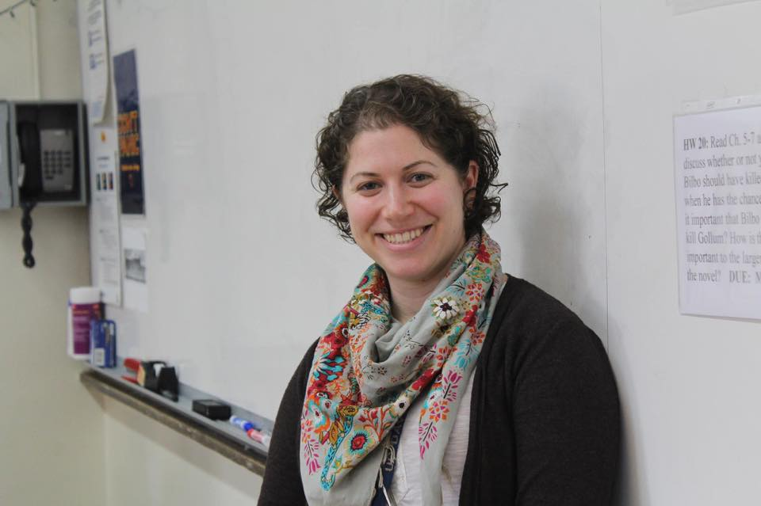
I am the faculty advisor of Tech Taqwa and have been the advisor for the past three years. I teach the senior selective English class, "Science-fiction/Fantasy." I love this course because I am a HUGE nerd and am proud of it. I am a Trekkie, a Whoovian, and a Tolkien-head. I love Joss Whedon's work and have watched nearly all of Miyazaki's films.
I am also more than just what I teach. Outside of school, I sing in the Oratorio Society and have a black belt in Tae Kwon Do. I also love cooking and spend much of my summers experimenting with new ingredients and recipes. Another important aspect of my identity is that I am an also orthodox Jew. I am fascinated by religion as a whole and this fascination informs a lot of my life style choices and decisions.
Mohammed Wasi

Freshman and sophomore year I wasn't really outgoing. I would go to school and come home straight and the only time I'd stay after school was for ball. I wasn't interested in any clubs. I found out about MIST after watching a video of two guys singing (Malik and Syed) and it was LITTT. Junior year more people I knew started talking about it and I always liked singing so I decided to try out. I was really excited and went to every single MIST meeting. I auditioned but the day the results came out I found out I didn't make anything except ball which meant I couldn't be in MIST. I was extremely sad and didn't even sing for a while, but then when the MIST competition came along I saw pictures and it looked like a huge family and everyone was having fun and enjoying and that feeling of family and making memories together and working together. I knew I had to be part of tech taqwa my senior year so I put in all I could and practiced all the time. I even joined chorus so it could help me with my singing. Alhamdhulillah I'm excited to be part of it this year with Nasheed and Improv. I know how much work Syed Malik and Rabbe put in to it and I'm gonna try to keep it going with Rabbe leading the way! I want my last year of high school to be amazing and filled with positive vibes and memories that last forever because that my friends, is .
PS I also joined mist because I have a crush on Hashim.
Abida Kabir
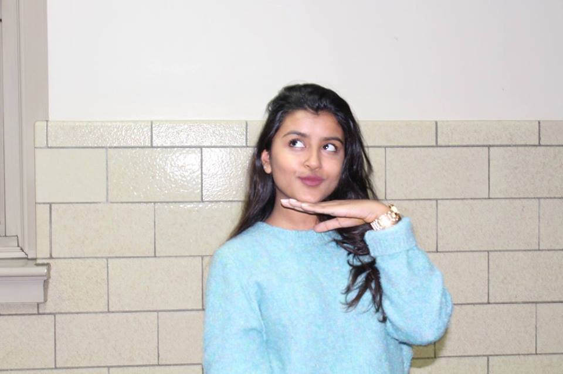
If you asked me, I'd say I was loud. If you asked others, they'd most likely say that I'm pretty quiet. But that's only because most of them have never heard me sing before. If you have, you know that .. I'm LOUD. My personal statement was about MIST. Let's just say that that's how much I loved the experience back in my sophomore year. The hard work we put into it, the matching outfits, the chants, the competition and the camaraderie. I had never been a part of anything else like it, a group effort with one common goal. I can't say that I'll ever forget how it felt to be a part of that. I love MIST, and I love what it did for me more. I made friends with girls from other schools while we fixed our hijabs together in the bathroom! I became close with sooo many people on the team and outside of it as well. For the first time, I was doing something that I loved doing, with people who loved it just as much as I did, and I finally got to be loud. I'm more confident, more outgoing, and definitely more loud. I'm more me, and I think that's the most important thing.
Adil Chowdhury
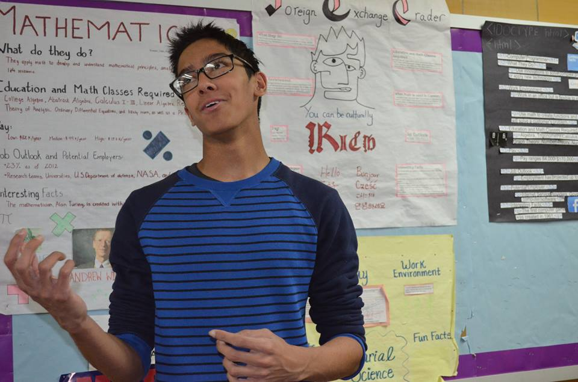
So, Im Adil, you might know me as helals nephew, we look just like each other, except he's british. But before I knew i was Helals nephew, I was a very different person than i am now. I was probably the worst kid alive from when I visited desh at 1yr old to when I turned 10. I had, and still have, little to no common sense. If I didnt get what I wanted, I punched, kicked, pretty much Brock Lesnar'd anything and anyone in my way. Instead of going to school I stayed home and hid under my bed all day. Theres a whole reason to all of this, a reason I keep confined to me and my closer friends and my family. It got to the point my doctor recommended me to a psychiatrist, my mom went inside while I would not, I would just stay in the car and think over my life, keep in mind I was only like 7. I was the same kid till I was 10 and moved to NY (from the homelands of the marvelous Georgia). I went to PS105 in BX and it was the worst place I had ever been to. I was literally depressed because of the fact I left everything and one i loved in Georgia and came to this weird new place. I spent the last half of 4th grade there, moved back to GA, moved back to NY, and here I am (for the above stated reasons). I went through middle school with a few complications, and then it came to start the high school app process. My dad came home one day and told me if i dont get into a specialized high school im outta the house. I had no interest whatsoever and was miserable through the whole thing. I went to Khans for 2 months and did in-school tutoring. My goal was bronx science but when I heard i got into tech i was devastated. I begged my dad to let me go to my zoned school, instead he made plans to move to brooklyn and leave, once again, my newfound friends, these guys are the greatest friends i ever had my best friends. These guys influenced me to change my life, start stand up comedy, do youtube, and play basketball. Fast forward almost halfway into my freshman year at tech. My grades are shitty, but I joined MSA, MIST, cricket team. These 3 groups have brought me the some of the greatest people Ive ever met, and I thank Allah every day for making me dumb enough to miss the bronx science cutoff. Im still a pretty bad kid, and I hope that you guys will be able to help me change that. Ima stick to my basketball therapy for now, I guess.
Aleena Khan
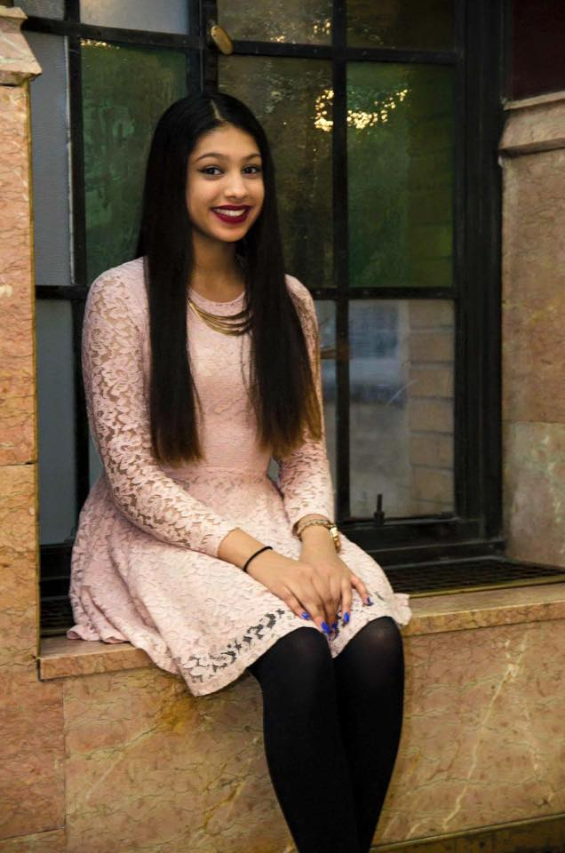
These past 4 years of Tech have been a challenge and a blessing. I've changed in so many ways and grown into the person I am today. All of the memories and friends I've made in Mist would always be the highlight of my high school experience.
Farhia Farzana
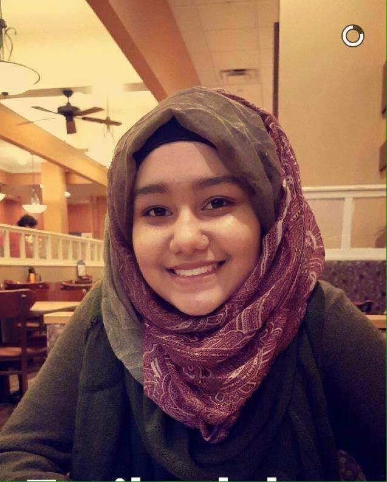
It's my last year here at tech... so I kinda thought, "Why not give this a go. If I mess up, I graduate in a few months anyways"
Fathima Aliyar

High school isn't easy for anyone; I don't consider myself an exception. When I first came to Tech, I wasn't the most confident person. I was quiet, introverted, and always afraid of being judged. I'd been like this for most of my life and wearing a hijab didn't make blending into the crowd any easier. My middle school hadn't exactly been the most abundant when it came to hijabis either and there were times when I really just wanted to take my scarf off and not be so prominent about my faith; I wanted so badly to fit in.
But coming to Tech was where I first experienced MSA and MIST. I'd never before known a congregation of Muslims in school. For the first time in my life, I didn't feel like the odd one out. I felt pride in my religion, I became more open, and I grew confident as a human being. I wasn't so afraid of judgement anymore. It was a change I desperately needed after feeling lost and alone and embarrassed for so long.
I still have my insecurities and, sometimes, I still hide behind the curtains — too afraid to take center stage. But I've come a long way from being that shy, self-conscious young Muslimah who didn't like wearing her scarf. I can stand the spotlight from time to time now, and show off my fleeky eyeliner while I'm at it.
Fatima Galal El-Din

I've always knew I was the really really crazy girl in my group of friends, in a weird way, whether it was the way I behaved or what I said or liked. Over the years, I have learned to embrace it because that is just what makes me me. When i started high school, I was scared I was going to scare people off by my personality but you either take it or leave it. Deciding to forget what people would think of me, I let my crazy self, the real me, come through and I like it this way. I'm one of those once in a lifetime friends, I'm so rare you would need to throw a masterball to catch me. If you still don't like me, it's fine. Haters gonna hate cause somebody's gotta do it, but Allah loves me so that's all that matters. Don't be surprised if you see me in the halls in a bright purple kimono, toe socks, holding a tennis racket, and my cat in a wagon behind me. That's just who I am.
Anyway what do you call a fake noodle? An impasta (that was funny)
Himesh Marharjan
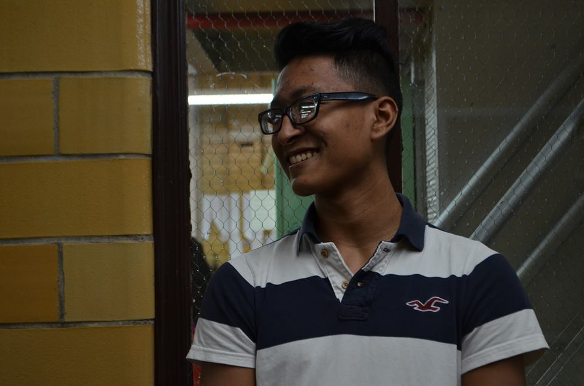
My name is Himesh Maharjan and I'm a junior, this is my FIRST club/extracurricular activity EVER in tech. Other clubs didn't really appeal to me and I always felt like they were chores. Nothing really made me want to stay after school or even find the energy to attend them. But then I saw a post about MIST in a Facebook tech page, they talked about everyone being welcome and they also talked about the different types of activities MIST had. When I saw basketball I immediately thought, "I need to do this because I love ball an ball is life." Lol. However, I saw nasheed/rap on it as well and I was not sure if I would try out for basketball because you had to be in another competition. I was always a quiet person who was shy and did not want to step into the spotlight so to speak. I had sang since I was 8 but it was in an after-school program with other kids so nobody really stuck out and we weren't afraid of being criticized. I had never sang in front of many people because I felt embarrassed and was pretty scared of being told that my voice sucked or that I was stupid for ever even trying. That's why I sang in my room and without anyone hearing except for my sister who wasn't afraid to sing and occasionally my parents who tried to make me sing since I was young. I always wanted to express my voice and myself through singing because I honesty found it beautiful and amazing. I always envisioned myself singing in front of people and having them tell me I had a nice voice and what not, but I was always too shy and afraid of the potential mean criticism that I might have received. That changed when my relatives FORCED me to sing and I gave it my all, they were so shocked that the silent kid who never said much had a nice voice that he kept hidden all those years. I didn't believe them but being told that started to build up my confidence. I kept singing at family gatherings, etc., and I eventually tried out for nasheed/rap. Even now, I'm still afraid of being told my voice sucks, etc., but I'm going to try my best and JUST DO IT!!! Im going to try and not be afraid of criticism because that is what people need to use in order to get better and improve. Also I'm pretty good at ball soo. . . . . Haha. So ya, that's something you guys might find interesting to know if you actually read this far. Also I'm basically six foot!
Jasur Abdurazzakov
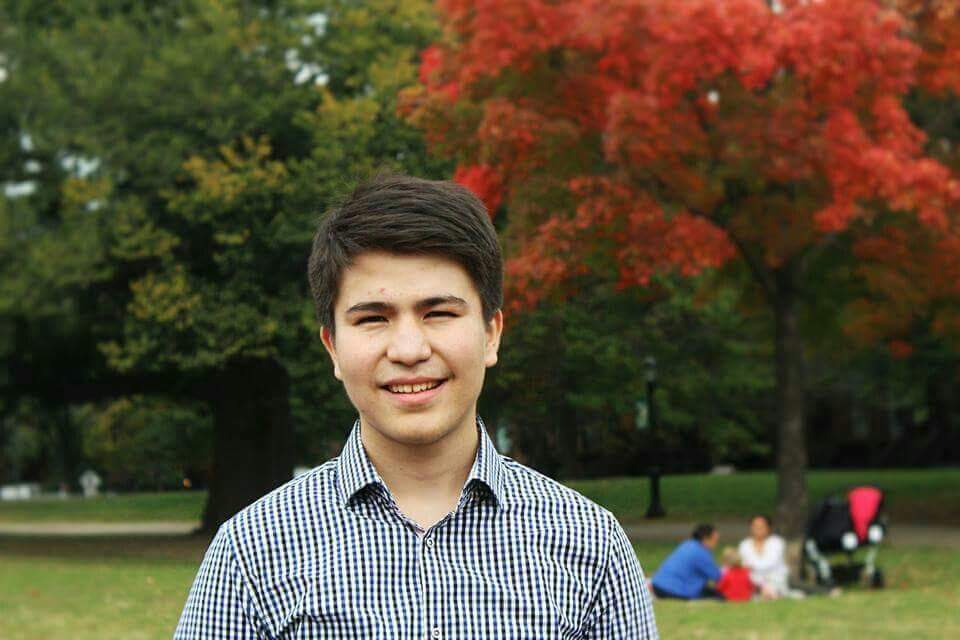
Over the years that I have been in tech, people always ask me “what are you?…are you like philippine or chinese?” Here is the answer: I am Uzbek…then people ask: “Where the hell is that?” I was born in Uzbekistan in the city of Samarkand, the famous city during the Silk Road and was the capital of the Temurid Dynasty (a.k.a. Mogul Empire, but we don’t like being called “Moguls”). I grew up in the streets of the city experiencing what I consider to be best years of my life, until my family and I moved to New York. This transition was significant in my life, because I didn’t speak English, I only spoke Uzbek and Russian, and I had no relatives or any connections here. I basically had to start a new life, leaving all my friends and the rest of my family behind. Its been 7 years since I first came here, and I have learned and adapted well to the society. Over the years the Uzbek community has been growing in regions such as Midwood and Middle Village. I am really glad that we have a community, because I can eat traditional food in the restaurants in these neighborhoods, such as shashlik, samsa, anti, and plov. The only Uzbeks in tech that I used to know was my brother and myself, but I discovered Dennis Lysov, who was also Uzbek. He understands some of the struggles I go through. Uzbeks are rare in tech, so if you see me, my brother (Tim), or Dennis, ask us questions about our culture, I am happy to answer and I like meeting new people.
Nishat Anjum

I'm always asked "Why do you wear hijab?"
And the answer is so simple: "My ears get cold."
Jehan Jamee

Ahammmm…….. I don’t know what to say…. Hello. I’m Jehan. Some prefer to call me Jelly. You probably don’t know me. I’m a fifteen year old girl, but got the mind of an eight year old boy. Hmm let’s see… uhmmmm… I’m afraid of the dark, I like cats, like to include black in everything I wear, not the smartest person, not the most photogenic person (as you can see from the picture above. I WAS FORCED TO TAKE THAT.)….what else…. I’m not the best when it comes to talking. Yes I probably have social anxiety. I tend to overthink everything. It’s really hard for me when it comes to small talk or even saying a simple hello, even if it doesn’t seem like it. While I’m talking to you, even if it’s about the simplest things, I’m thinking “Do they think I’m stupid? Do I have a booger up my nose? Why are they looking at me so intently?” Don’t even get me started when it comes to deciding whether or not I should say hello to someone. That’s really freaky. “Should I say hello? Will they say hello back? [2/1/16, 4:03 PM] Jehan Jamee: What if they hate me? What if they aren’t in the mood? Oh god they’re looking at me. What do I do now? Should I just not look at them? God what is happening? Dude it’s just a simple hello just say it… no I can’t ughhhhhhh.” So if I haven’t said hello to you and you were hurt, I apologize, I was either freaking out or I just don’t like you… it’s probably the first one. I like everyone. If you know me well, you probably think I’m the complete opposite of what I just described. Don’t worry; even if you are like one of my best friends I’m actually really scared of you. I’m really bad at expressing love to my friends. I don’t show affection much. Just know that I actually appreciate all of you and love you all a lot more than you guys think. (Yall know who you are. Don’t make fun of me for this later.) Ok now I feel weird. Should I end this now? Yea ok bye.
Joy Gonzales
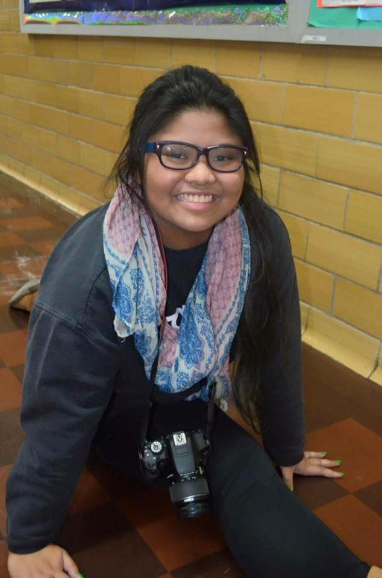
I've always been afraid to stand up for myself. In the sixth grade, I started to get bullied by a guy in my class just because I liked him. Ever since then I've always been bullied and I've never been able to fight back on my own. Since the 8th grade I've been catcalled. I would have obscene words thrown at me. And every time I would have my quick yet controlled temper reply sassily in my mind. Only in my mind. I ended up developing depression and anxiety. Despite always being happy, jumpy and a literal ray of sunshine, I frequently have my cloudy days. Now after all these years of being silent, I want to speak up. I’m starting to fight and I'm finally searching for my voice, I just don't know how to find it.
Mahfuj Ahmed
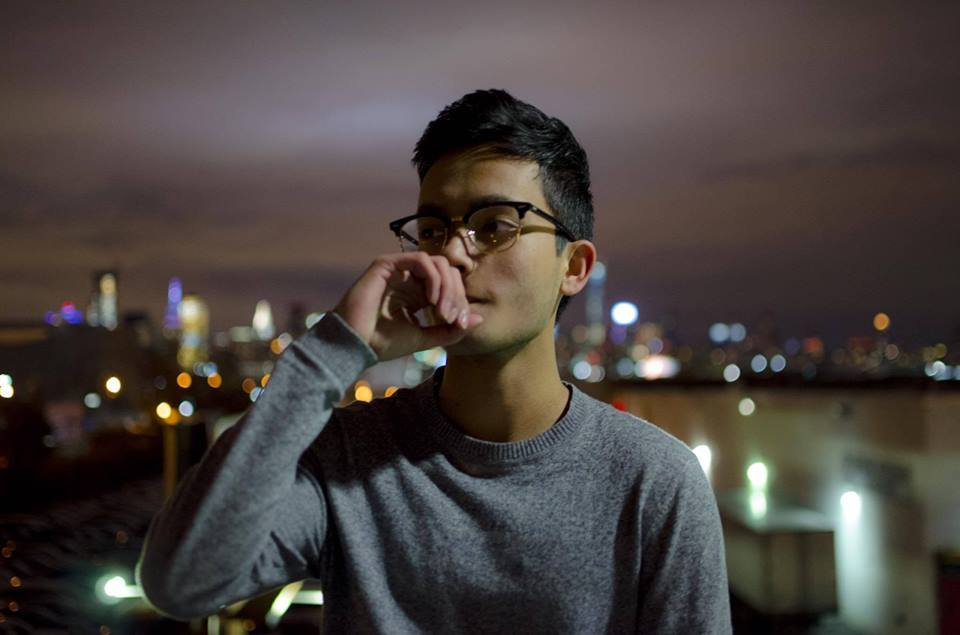
Im more hype for mist then i am for college
Mayisha Delwar
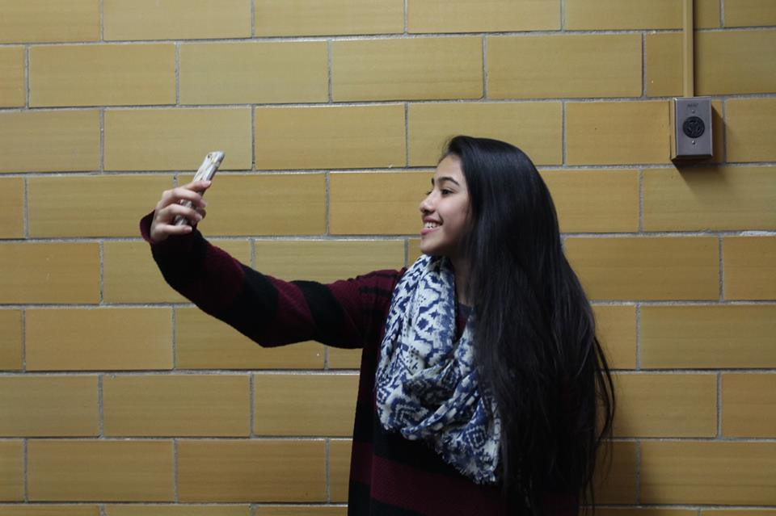
I have a love for a lot of things. Like food and animals and my environment and my friends and strangers and sammiches and bananas and cats and ball and Allah and a lot of stuff smile emoticon I have a lot of hobbies and interests in things like eating and sports - a lot of sports, and photography and singing and drawing and projects and a whole bunch of other stuff. Ever since I entered high school, however, I haven't really been able to commit to anything. I just can't seem to find the time. I have a routine of waking up, going to school, coming home, doing homework, sleeping and everything all over again. Sometimes I forget to eat. When I think about not being able to do some of the simple things that I love doing, it makes me kinda sad to see my devotion to schoolwork getting in the way of my free time. I used to go to the park and play ball until like seven or eight and come home sweaty with a tan. I managed 4-6 hours of running around in the sun after school even with a ton of schoolwork. Now, I think the work load is quite fair for me but don't get why I'm always so tired and the day goes by so fast for me not to be able to do anything. I don't even have time to talk to any of my friends, which seems somewhat ironic because I happen to be that social butterfly, always seeming so energetic with a smile on. Smiling so much gets tiring. Like my cheeks hurt, you feel? And there's always an end to energy, there's not always enough to keep me going. I was in gym one time and a girl asked me why I wasn't being my usual self - that I hadddd to be energetic and keep the people around me going. Pshh girl please. This school year is going by really fast for me, which I'm kind of happy about although I really like school. I really look forward to mist, being my first year. It's like an escape from school to do one of the things I love. And then when summer finally comes, I can start painting and playing ball and work on projects and distress and eat foooood and see my old friends once again smile emoticon
Mohamed Hassan
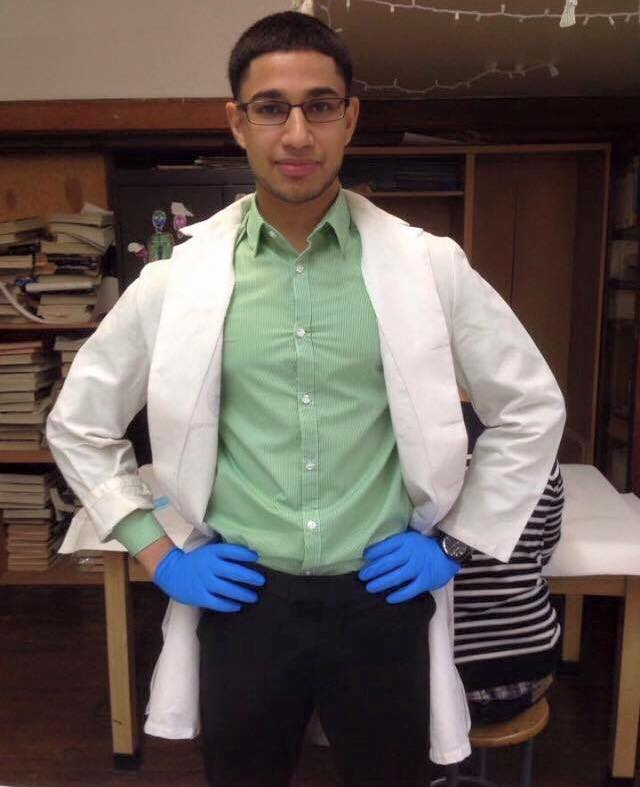
I'm a BioSci major by day and a Math major by night. Moral of the story: strive to be a multifaceted polyhedron while maintaining your homeostasis. I've calculated our chances of winning this year, and first place is ours for sure.
Mohammed Khan
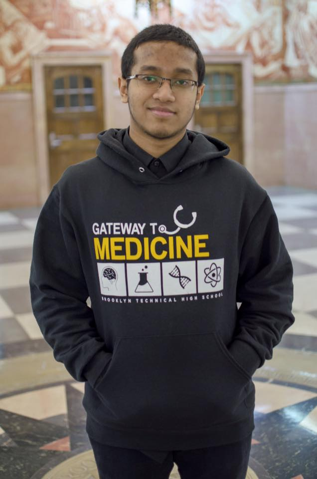
MIST is the key to success.
Muhammad Shahid
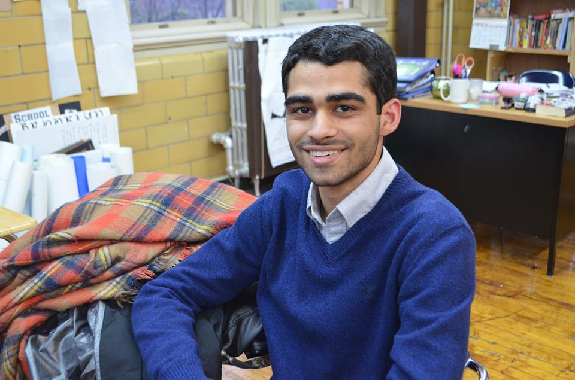
I'm about to start the next chapter of my life, but even after almost four years, I don't know if I'm ready to face what's next
Mubeen Sadaqat
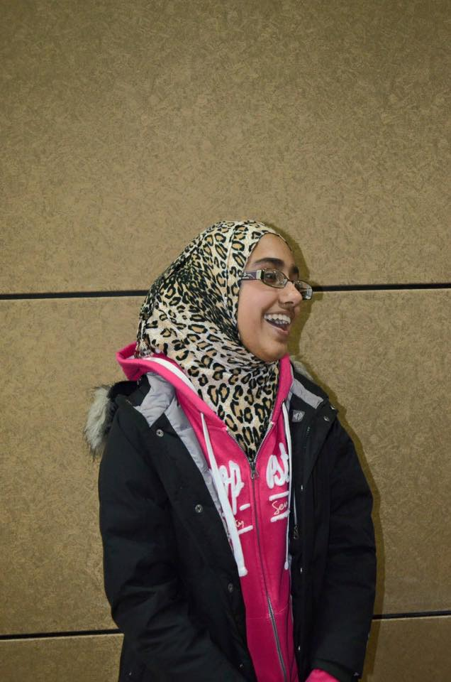
This is probably going to end up being so cliché. I’m not that inspirational and I did consider copy pasting DJ Khaled’s inspirational speech but Sadia told me I would be a rat if I did that. But basically I was born in Punjab, Pakistan and I moved to Brooklyn when I was three. That’s probably been the biggest change in my life. Moving to Brooklyn wasn’t easy especially when you’re a three year old who spent all her time with cows, horses, buffalos, chickens and goats. But the hardest part of all was probably leaving my grandparents. I had my grandma with me all the time like literally she raised me. When I moved to Brooklyn I didn’t have the adhan from the masjid waking me up at fajr or my grandma walking around the whole house to bless everyone at fajr time instead I had my mom wake me up at 9:00! I wasn’t used to this and I grew up learning to wake up at 5 or 6 or whenever the adhan happened in the morning. Then came the milk. Growing up I always had cow milk like legitimate milk that was all natural not milk with like 28329 chemicals in it. I ended up not drinking “American” milk for about a month until I finally got the hang of it. I’m so used to it that when I go back to Pakistan to visit I tell them that their milk tastes disgusting and I now refuse to drink cow milk (aka all natural milk). And then came language. I’ve always been a very social person and I absolutely loved talking. Except my grandma wasn’t here now to listen to me rant about how the new cow didn’t like me and the chicken took too long to lay eggs and the horse was brown and I wanted a white horse. All these people were talking in English and I was soooo beyond confused and I really wanted to talk but if I did it would be in Punjabi and some broke Urdu (it’s better now though). I thought all these people were talking in Farsi because whenever I didn’t listen my mom would always be like “Am I speaking in Farsi or what?” And last but not least it was my personality that had a hard time adjusting to the changes. I was a loud and energetic child like most kids and I ran around the house chasing chickens but now in Brooklyn I could no longer be so loud because something called neighbors actually existed. In Pakistan our houses didn’t touch or weren’t right next to each other and we didn’t have people living in the basement that we had to be careful about but now I had to be quiet and sit down and I couldn’t even play tag in the house or even jump without the people in the basement complaining. Later I came to realize we couldn’t keep horses to ourselves. If I wanted I had to go to a barn to ride a horse like what even? I grew up learning how to ride a horse with my grandpa who was a horse rider. And horses are still my absolute favorite till this day except I don’t know how to ride them anymore. But at last I did adjust to the city life and I did learn English like really quickly and I did drink the not so real milk and I did talk to my grandma over the phone every day and I did go to the masjid every day. However my village life will always have a place in my heart just as much as my life in Brooklyn does and all praise is due to Allah who gave me the strength to adjust to these changes.
Coral Aquino
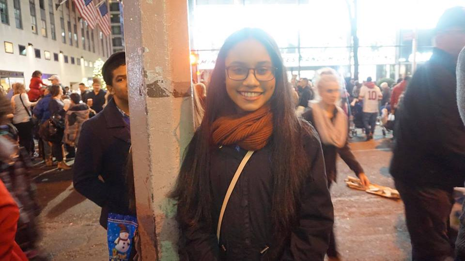
I'm a strong believer in things happening for a reason. So, whenever one door closes, I'm not let down because I know for sure that another will open. That's just how life works. It's a hall full of doors, and each one of us has a key that is uniquely crafted to open our own. The key is made up of sugar and spice and everything nice (power puff girls anyone??? no? okay lol), no but really...that key is made up of special components: your personality, thoughts, emotions, and drive. When you least expect it, your door will burst open, but you have to remember to keep your key close by.
Abid
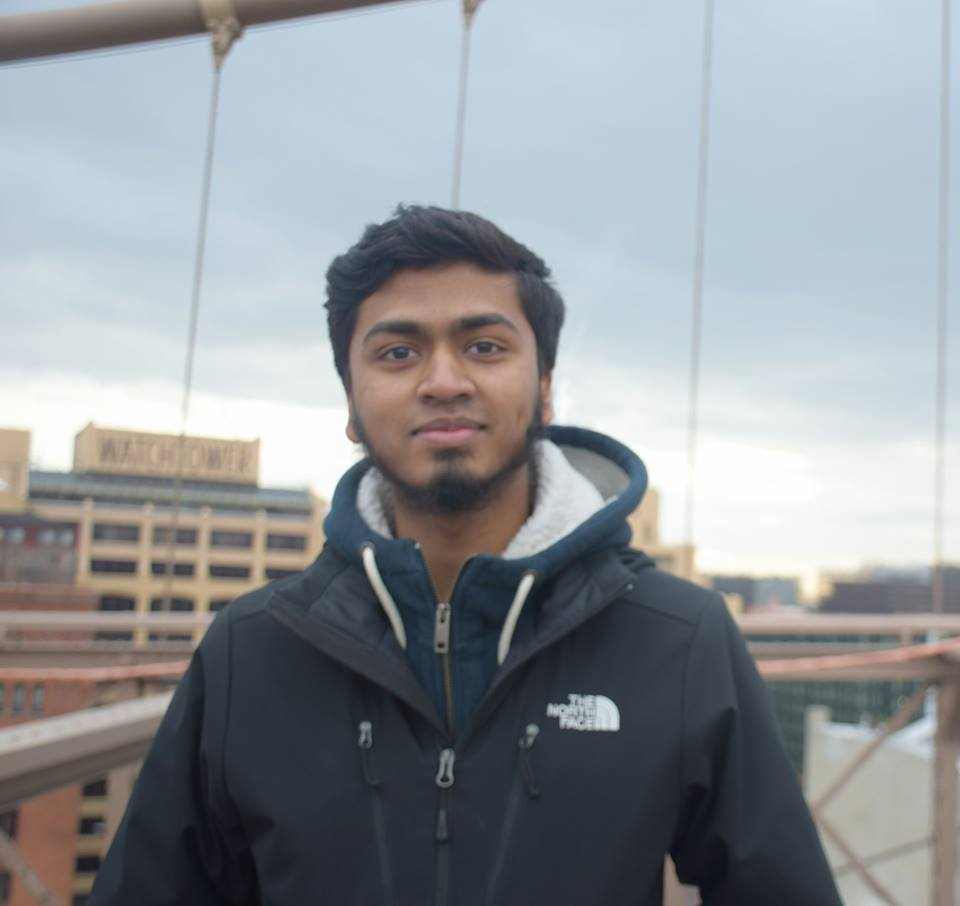
Once you accept that everything happens for a reason, you can't help but smile.
Nadia Rykova
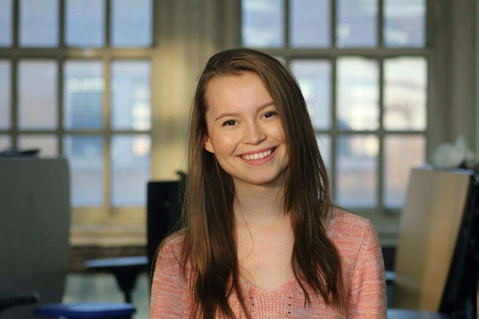
There are two girls. One girl is confident, has a huge group of friends, and finds the best deals at Anthropologie. The second girl reads all day, wears glasses, and pretends she’s characters from TV shows. Now combine both of those, and, well, you get me. Back in middle school, you didn’t want to be the nerd. But being a drama queen was worse. If you were both then you were definitely screwed. You wore makeup? You’re pretty. You didn’t? Ummm, ew. You wore glasses? Get contacts. You wore nice clothes? Welcome to the cool club. You didn’t? It’s called a mall, visit it. That’s the mentality I grew up with. And I was always the girl who didn’t have it. I was the second girl. In high school, I changed my look, invested in eyeliner, and grew confident in myself. I became the first girl. It was great, until people started bad mouthing me that I was “mean” and “selfish”. I wasn’t the nerd anymore. What more did they want from me? After deciding to ditch society’s stupid rules, I embraced the second girl again. But I kept the first girl too. No matter what you do, there are always going to be haters. Taylor Swift even wrote a song about it. Not that I’m a fan, but besides the point. I’m both. And I like it that way.
Nafiza Tarannum

Asalamualikum, heyyooo lol. So my name is Nafiza and Im a very very very hyper person. I don't know why lol I’m really loud and talkative. If talking was a job, i’d be beast at it. I also, like to make bad jokes and throw subs. I can’t draw...at all. I DON’T UNDERSTAND WHY I CAN’T IT’S LIKE I HAVE ARTISTS IN MY FAMILY WHERE’D THAT TALENT GOOO!!! (sad face emoji) Anyways, time for my tragic life story. Ok so, all my life I wasn’t a very good person nor did I really practice deen. But this all changed when Tech attacked. LOL, but in all seriousness Tech honestly changed me. Alhamdulilah, I’m in a better place. I learned so much and met so many people. OK OMG TELL JUST TELL YOU BOUT THEM REAL QUICK. Ok so, I never really fit into any group, I was the odd ball. I was the one going to every group to make more and more friends, but they never really stuck. But now I have these amazing people who honestly encourage me everyday to be a better muslim and to NOT FAIL CHEMISTRY (LOL Ms. M sucks). They are pretty incredible and I know i dont tell them enough but I really appreciate them and love em for the sake of Allah.OK ANYWAYS BACK TO ME HAHAHAHA (Self absorbed much?) Ok i really love HSM but not the second movie because it was mad lame. I suck at math and science, so no doctor for ammu (distressed emoji). I tend to get annoying, and tend to ramble when I'm nervous so I apologize in advance for that. Hindi movies give me feels (distressed emoji again). Attack on Titan is the only anime I watch and Levi is very mA. I’m very imaginative (winking emoji) and i tend to analyze everything, I MEAN EVERYTHING HAHAHAHA (Cry emoji). I’m also a hardcore disney fan, I love all the disney princesses but honestly my favorite is Ariel. She is so fabulousss lol. Ok i just realized that I listed random facts about me. Lemme get deep real quick. The dunya is temporary, don’t make being successful in the dunya your goal when the real goal is achieving greatness in the akhirah. There are people who are famous on this Earth whose names have never been mentioned in the heavens, there are also people who are constantly being mentioned in the heavens who are not known in the dunya. We always have to remember our goal is to please Allah. Aiiii so, that’s pretty much all you need to know for now. I’m just a talkative bum who likes people. OH BTW PEEP THE PEOPLE IN MY PICTURE (winking emoji) YALL MADE IT LOL.
Rabbe Islam
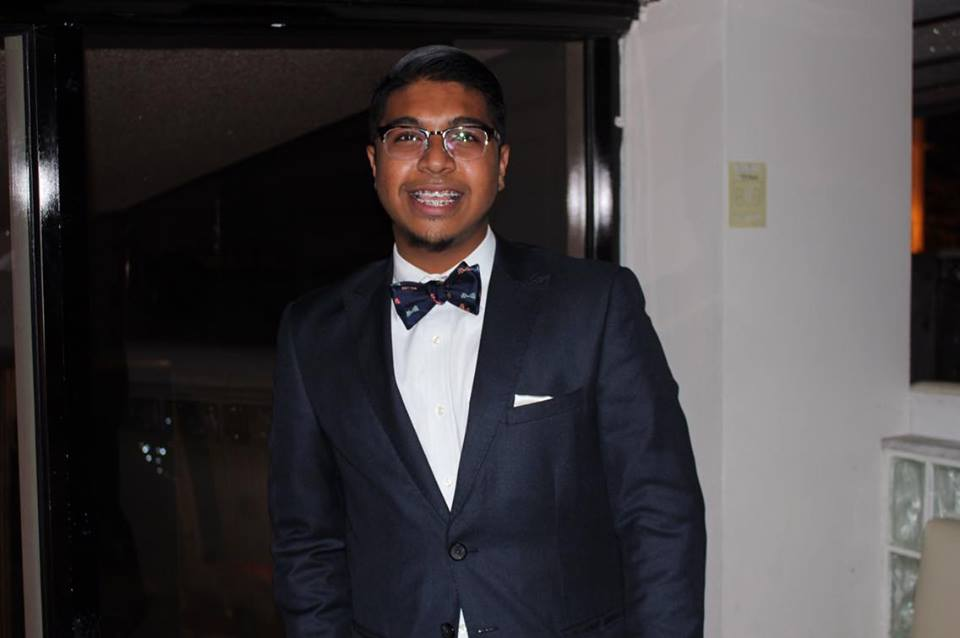
I would sit around and dream all these big dreams, but never set goals-- never went out of my way to at least make an attempt. Then Mist came along, and I found myself having to step out of my comfort zone and build my self confidence. And I was successful in doing both-- I learned to be confident in my abilities and learned so much about my religion and about myself. What especially helped was just practicing everyday for Nasheed in the staircase, like literally everyday a month before the competition, which taught me dedication. A week before competing in my first Mist, I could just imagine what it would feel like to place first in Nasheed Regionals.
MIST was the most eventful weekend and what do you know, Syed, Malik and I had placed first for Nasheed. It was one of the greatest moments of my life-- just to hear our names; to see the way the crowd became alive as the words came out of our mouths; it all lit a fire inside me. Just from those crucial moments, I found myself motivated to steadily progress towards achieving other goals in my life.
Currently, I feel that I have accomplished a lot of the goals I sat around dreaming about during sophomore year. Although they aren't humongous, incredible life changing goals, just to see something from my dreams become a reality is incredible. I learned how to develop a good work ethic, dedication, leadership, humility, and so much more. And it all roots back to Mist. Mist 2016 is gonna be a whole new challenge-- I'm going to have a new nasheed team, and this will be my last year. The amount of fears and jitters I have with this upcoming competition is endless but I know that I'll be fine; might cry a little but I'll be fine. But if I'm gonna tell anyone one thing, Mist is Definitely the to success!!!!
Rageeb Mathab
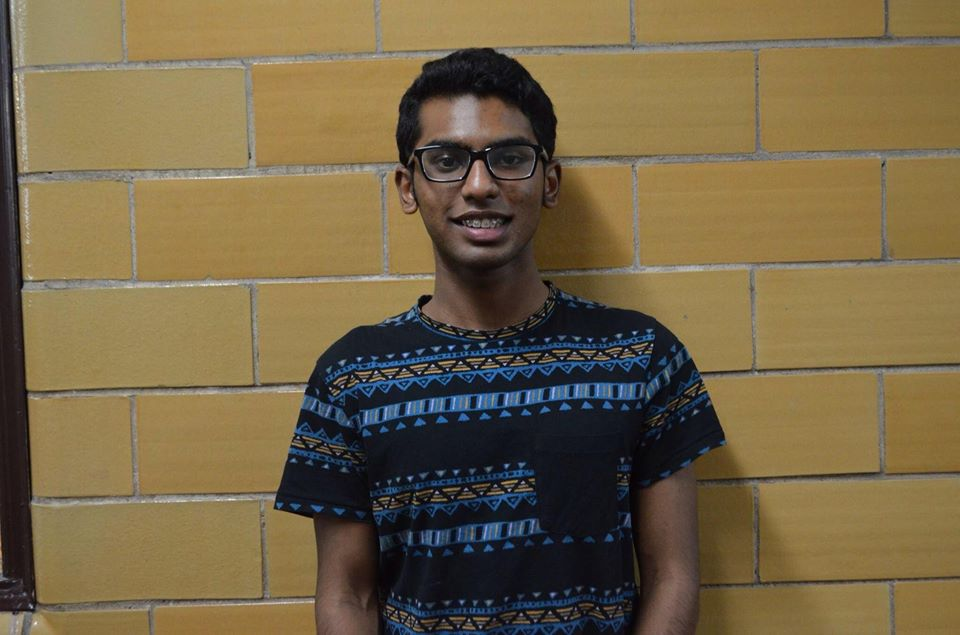
Freshmen year I honestly did nothing. I did not join any teams, or any clubs, and my grades weren’t that good either. Sophomore year I started getting into activities and making my real friends. I joined MIST the junior year of high school when I learned about it. Honestly, at first I was very pessimistic about it- both my parents are very secular and warned me against any religious club or affiliation- and I do no blame them, they did not want me to become a victim of Islamophobia. However, with my friend Mahfuzur’s urging, I started going to MSA, and particularly the Jummah club. Honestly, those Friday afternoons allowed me to connect to a spirituality I had never felt before. Listening to Yasin’s speeches before and after the prayer was also very influential. While at first I was a little self-conscious about what people would think about me praying at Fort Greene Park or in a classroom, I soon realized that I didn’t give a S**t. I know wear my faith as an ornament. Last year, I did not win anything and didn’t really enjoy my events at MIST. This year, inshallah, I will win the competition and bring the chip home for Tech. I won’t look at the past, and I won’t look at the future. I will just look to the present and do right by myself and Allah.
Sabiha Obaid and Samihah Sirajulislam
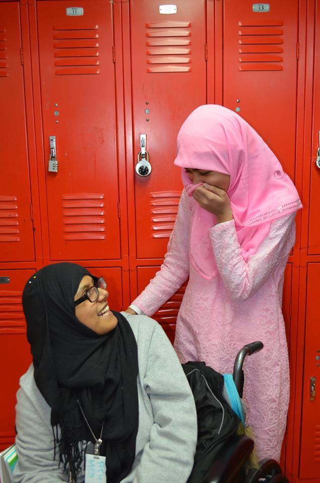
“If I had to pick one person to live with in a cozy apartment with big windows, floor to ceiling bookshelves, and a lot of cats it would be Sabiha. Listen, one day we’re going to travel the world and run a cute blog and write feminist essays and be unapologetic about who we are.
Sabiha and I first met 8 years ago at a Qur’an class in our local masjid. On her first day, [CENSORED BY SABIHA BC IT’S EMBARRASSING] and she was crying. I went to talk to her and we've been friends ever since. Of course at the age of six, I had no idea that so much of who I am would be influenced by this crying girl that I just thought needed a friend.
Sabiha is honestly one of the most brilliant people I even know. (she was valedictorian and won a district spelling bee and even though she sometimes can't tell the difference between her right and left I still love her ) She got me into Harry Potter and Doctor Who and video editing and a ton of other stuff. I can always count on her to let me borrow books (such privilege; her library is bigger than my future smh) or to completely understand when I rant about capitalism or gender roles or some other societal malady.
We didn't go to the same middle school or elementary school so being at Brooklyn Tech together is a blessing. I've only been a part of Tech Taqwa for a few months but the feeling of love and family amongst everyone is really strong and I honestly feel it so much. Without Sabiha I don't know if I would've had the courage to go to that first MSA meeting alone or tried out for MIST or met so many amazing people bc of these clubs (7th pd prayer squad ) Yeah so anyway i’m rambling but Sabiha is just this amazingly gorgeous nerd and I'm so glad to have her in my life.”
“People often ask us if we’re sisters. We decided to answer the question by saying that we’re blood sisters in a cult that sacrifices marshmallows. Samihah is one of the smartest and most amazing human beings I have ever met (even if she's a socially awkward weirdo who never does her homework). I’ve known her for as long as I can remember and I can’t imagine life without having her. In the summer after fifth grade, Samihah and I wrote a series of essays concerning the school system and how our parents don’t take us seriously and I’m pretty sure that was basically the foundation for our little social justice seeking hearts. We've developed a lot since then and I’m so happy that she’s been there for me for eight years. I know I can always rant to her about social issues and how disgusting gender roles and racism are and I know she'll always be there to fight someone with me.
Samihah’s always there for me. No matter how annoying I am, she still listens to me and helps me out. Recently I tore my ligament and had a patella dislocation, so I really can’t walk. Even though Samihah isn’t required to, she pushes me around in my wheelchair. I tend to be very reckless and get hurt a lot. (I lowkey set my hand on fire one time)
I won’t call myself the best Muslim, but I really try. Being apart of Tech Taqwa and meeting so many wonderful people has definitely been amazing. In all the previous schools I’ve been to there were hardly any Muslims, and I love that there are so many hijabis here that I can relate to and talk with. Honestly, joining MSA has just been an amazing experience so far I’m glad that I’m able to be apart of this with Samihah. While we may not be actual sisters, we grew up together and that's basically the same thing.
Sadia Tasnim
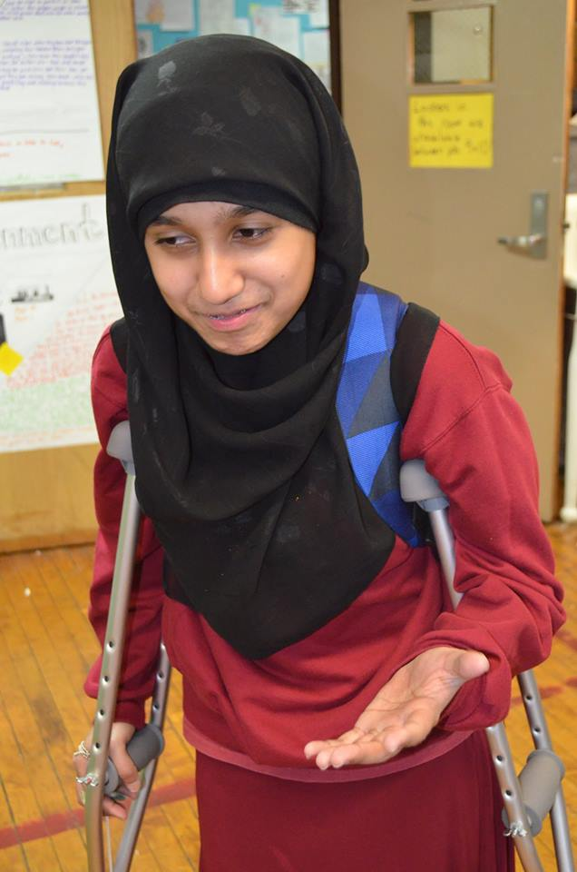
I don’t think I’ve always been indecisive but I feel like I’ve always been a follower, I’m looking for validation. But I try hard not to act like it. Lately I’ve been finding myself thinking “No, I’m not wrong, and even if I am, I have to say/ do this” or else I wouldn’t say or do anything at all. For MIST last year, my first year, I got into poetry, and I didn’t meet the other competitor for poetry until right before the competition. I didn’t really have any leadership on what to write or how to write it so the whole time I had to keep thinking I’m going to do well, I might even win, I’m going to win. I had to keep thinking like that or I would never have been satisfied with my work. Not thinking about what anyone else would write about, not thinking about what anyone else thinks was part of the challenge. I had to just write what I felt would move me if I read it (tips: if you cry when you write it, it’s probably kinda good; keep it humble tho). Writing something that someone else will be able to read and criticize, I always have to get past the fact that I can have an opinion and there will always be someone who does not agree, I have to be unmovable, but there is always regret. And all of this that I’m writing, I’ll probably look back at it and regret it later, I’m kind of regretting it right now, but if I don’t finish this, I . The community that MSA has given me is really conducive to this kind of thought; there is so much support and opportunity all the time. Someone actually looked at me like I was ridiculous and said “Of course, we’re your sisters.” (I just said thanks for waiting with me because I hurt my leg and had to wait to be picked up). And I was like but like where ya real family at. Jokes aside, I am really glad to have become the person I am now I feel like middle school me would cry if she saw me now. Focusing more on being a better muslim has made me more open to change and that, I think has made all the difference.
I’m writing this thinking this is kind of childish; I’ll probably look back at this and be like I was such a fruit, but that’s my problem. I need to be able to say what I think and feel without feeling like I shouldn’t. I need to have a voice and I need to be able to speak for myself and what is right. InshaAllah my time with MSA and MIST will help me improve in more ways than one.
"Those who happily leave everything in the hand of Allah will eventually see the hand of Allah in everything. Because, worry ends where faith in Allah begins!"
Shanjana Chowdhury
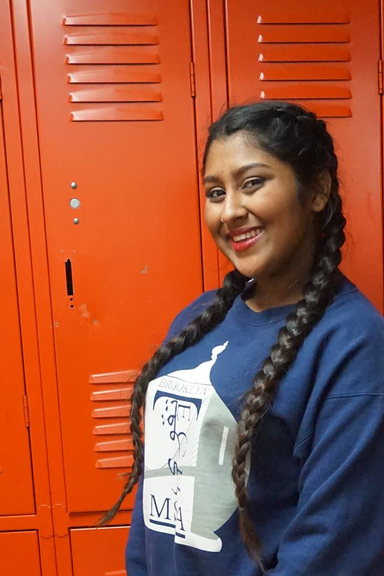
Thinking back to freshmen year, I’ve changed drastically. If someone were to tell freshmen me that I would change this much, I wouldn’t have believed them. When I started at tech, I used to be quiet and shy. It took a while to make friends that I could actually talk to. I used to long for attention. I didn’t want to be the girl everyone looked over, the girl no one remembered. I hated being alone and hated the idea of being forgotten. Around the second semester, I started shedding my skin. I was worming my way out of that hole. I started talking more and tried to become more outgoing. I made new friends but I was still a bit shy. Sophomore year, I came back as a new person. I became extremely loud and outgoing. I went out of my way to make friends. I was always happy and energetic. I still hated being alone so I always surrounded myself with friends. Life was great. Now, junior year, life isn’t the best but I’ve learned to deal with it. I’ve became somewhat closed off. I stopped talking to a lot of people that I used to talk to all the time last year. But, I’ve become extremely close with the friends that I did keep and some I even made this year. I now enjoy being alone. Sometimes I would get sad and quiet but I’m still pretty loud and happy. I’m still pretty outgoing when it comes to making friends and interacting with others. Life changes. People grow up and change. Nothing ever stays the same. It took a while for me to understand that and I’m glad that I eventually got it. I’ve changed a lot in the last two and half years. I cannot control life but I can go with the flow. I’m only human.
Tabassum Bhuiyan

It's scary to think about how different our lives would be had we never made the decisions that we did. I honestly consider the fact that I came to tech as the one of the biggest blessings in my life because of how easily things could've gone awry (even if I am typing this at 4am and crying over ap capstone hw hahakillme). But in all honesty, when I look back at my life before high school I see myself as shadow of the girl that I am now. There weren't many other hijabis or muslims in middle school and on top of that, I was new to it and I built a shell around me that wasn't there before. People looked at me differently but I realize now that I was the one who allowed it by becoming quiet and insecure and doing whatever it took to get them to fit in; even if it meant losing myself in the process. I realized that just because I fit in, it didn't mean that that's where I belonged. When I came to tech last year and joined MSA/MIST/Jummah and other clubs ofcourse, everything just kind of fell into place. For the first time I was sincerely in love with Islam and God and I think that's what really beautified everything else in my life. Even if I did put on my "sparkly girl goggles,"(shout out to Omar's speech-GUURL HE GON BREAK YO HEART) I was just unconditionally happy here. In the busyness of the week, (THEY DON'T WANT YOU TO SLEEP) I can honestly say that the friends that I have here and the time that we spend together is a gift. Even if I'm still the girl that smiles a little too much, dances around when I'm happy, and fangirls over EVERYTHING, thanks to them I'm not afraid to judged for it.
"Verily in the remembrance of Allah do hearts find rest."
Tanima Rahman
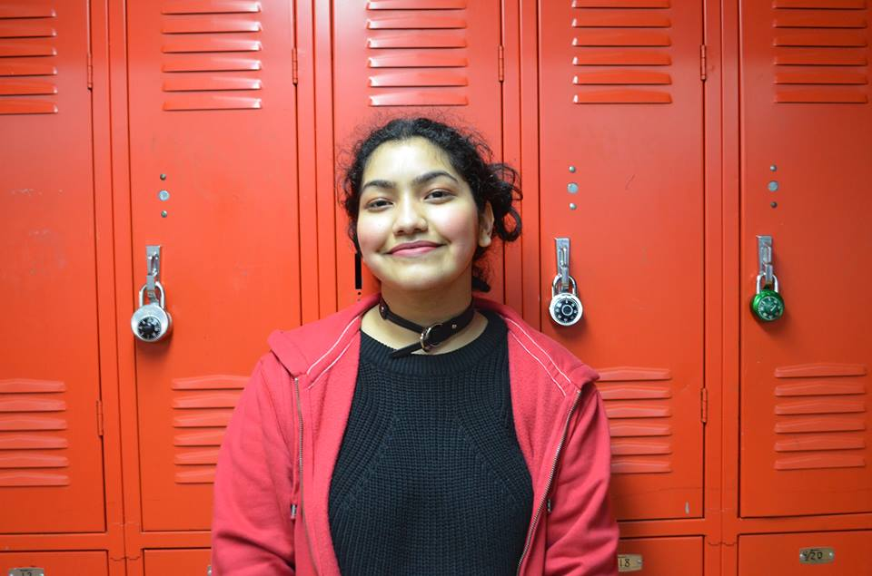
I love MIST and probably always will no matter what changes in my life.
Tasneem Ahmed
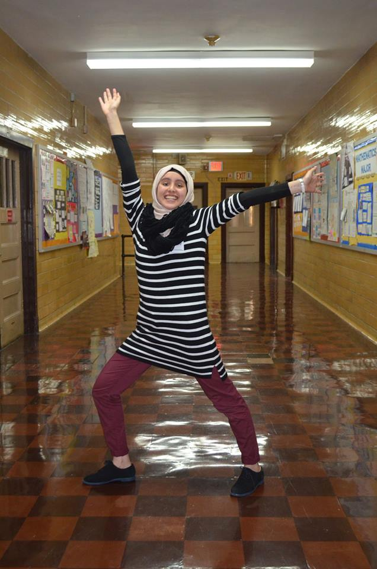
I’m the introverted girl you’ll find at the corner of every MIST meeting. She’ll avoid eye contact with anyone. She’s too self-conscious to approach people because of the exclusivity of these “cliques”. Instead, she just clings on to the few people she trusts. In my freshman year, I was a social butterfly. I wasn’t afraid to approach strangers, and I wanted to make friends with everyone. But, as time passed by and I began to notice the artificiality of the majority of these friendships, I started to question my motives. In fact, in less than one year, I had completely transformed from the social butterfly to the quiet girl with one good friend. Junior year, when I was rejected from MIST try outs, I was devastated. Ever since I was in the 2nd grade, I enjoyed singing, and it was one of the few things I felt that I could do without any unwanted pressure. However, the time off MIST gave me so much time to relax and I started to break these boundaries that I had set up. Slowly but eventually, I made more friends, and even though I can only think of 5 good ones as I write this, I’ve learned to appreciate so much, including what I was missing out on: MIST. This year, I am back, and I am ready to sing my lungs out. Whether we lose or win, I am just happy that MIST was part of my journey to reaching social maturity.
Tasnim Ahmed
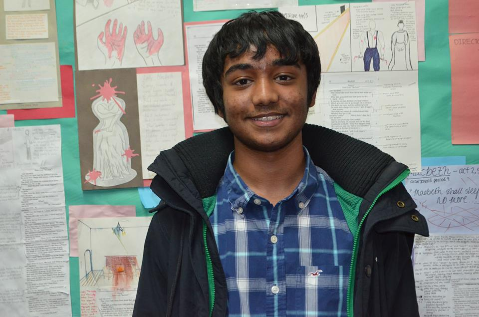
Assalamu’alaikum! So many of you don’t know me because I am a freshman who is shy and does not approach people to let them know who he is. Therefore, allow me to introduce myself properly;my name is Tasnim Ahmed and I, like some of you, am a freshman at Brooklyn Technical High School and although I may seem shy and sound like I have a deeper voice than I actually do when I am around new people, I assure you I love to hog all the attention and have fun! Another thing that is so common in my behavior around my friends that they take as part of my daily routine is making them laugh! I love making people that I am not still shy around laugh, but most of the time they are laughing at me rather than with me... tongue emoticon Just like everyone here, I am academically gifted (or at least I hope :/) and usually ace everything and/or anything that is meant to assess me. Enough about my personality, and onto MSA! I have known about MSA ever since around 7th grade, the reason being that my sister is in Stuyvesant’s MSA and MIST Team. Naturally, I aimed for Stuy and was utterly destroyed when I got into Tech… However, after a while at Tech, I felt like the school was wrapping me into their family, and if it helps you to visualize, I felt like an infected white-blood cell being eaten by a macrophage. After a long day at school of not understanding why 9+10 is not equal to 21, I know MSA will somehow get my mind off of it and just bring me a special kind of joy. After each meeting, I can’t wait to get back to the next one! Next is MIST. I knew from 7th grade, if there was one thing I would join, it’s definitely Nasheed! I saw Malik and Syed on YouTube during 2013, and the year after I went to MIST Nationals at Washington DC and was able to watch Malik, Syed, and Rabbe perform! It was amazing and their 2015 Nasheed was even better! I tried out for Nasheed, and only Nasheed. It wasn’t a result of my confidence, but one of my laziness. (Which is another thing about me, I am “mad lazy.”) I definitely gave it all that I could in that state of nervousness (I am also extremely nervous when all eyes are on me, but somehow I pull through grin emoticon.) However, I was shot down again and did not get in. I could not help but relate this to my experience of not getting into Stuy. After a while of being frustrated, I just realised how much more I wanted to be in Tech Taqwa’s Nasheed team. I hope I can try again next year iA and successfully continue our streak of 1st place! If any of you read this far, thank you and I hope I can get to know our whole community! Assalamu’alaikum!
Makinoon Sami
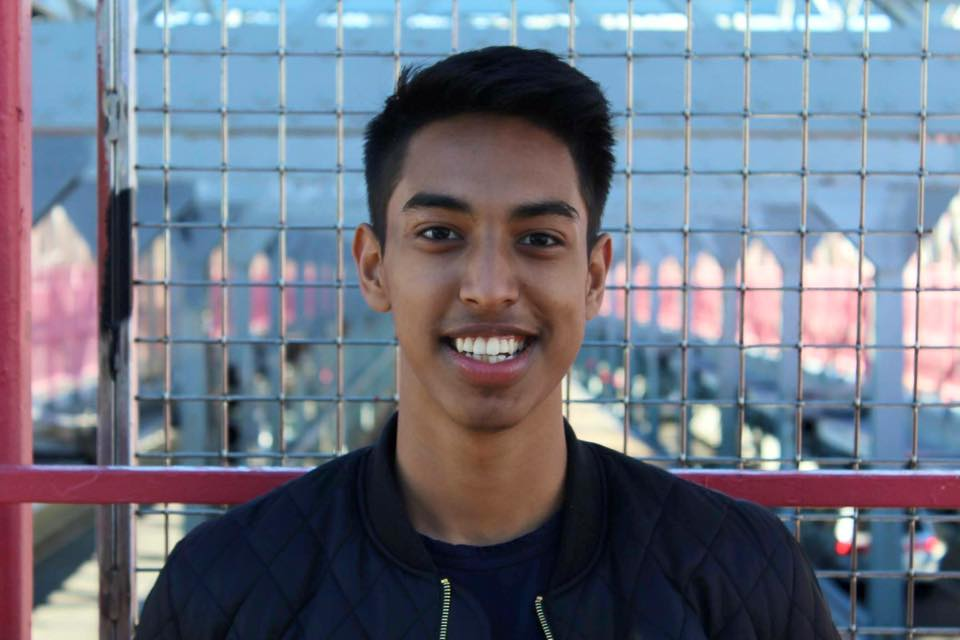
I been involved with msa since freshmen year, but never got to go and experience MIST. I just happened to be the kid who would be shy to interact. Over the years I've learned to overcome my fears of social anxiety by volunteering, mentors, etc, I learned you just gotta let go and be yourself, make sure to step out of comfort zone. At first, I didn't know how I would get along with everyone but today I got to meet many from Tech Taqwa and I'm glad to say that everyone here is filled with talent and outspoken persona. I'm ready for the hype, excitements, new friendships and important takeaways from MIST. inshallah Tech Taqwa will get first place this year.
Mahwiyat Miah and Amena Abassi
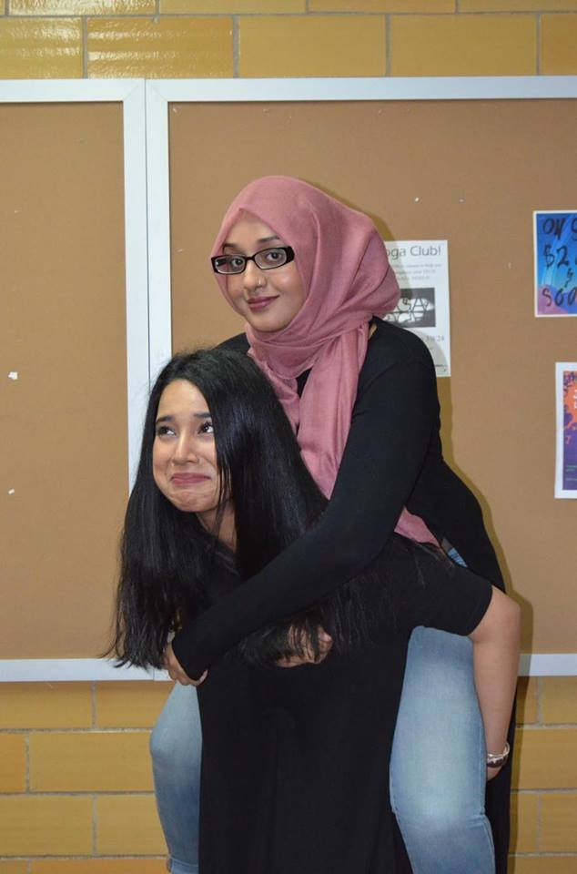
She was always the weaker one.
Humyra Chowdhury
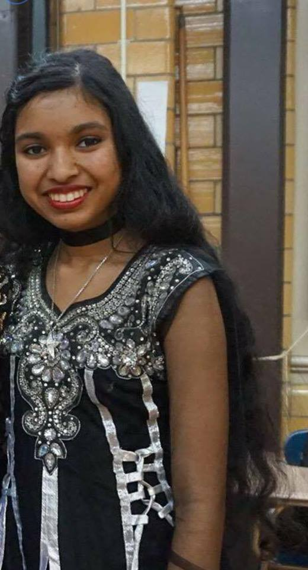
I can't say that I have ever had much confidence but since coming to tech I have been able to find true friends that have helped me even if a little find confidence to shine just a bit brighter
Hodeena Elsayed
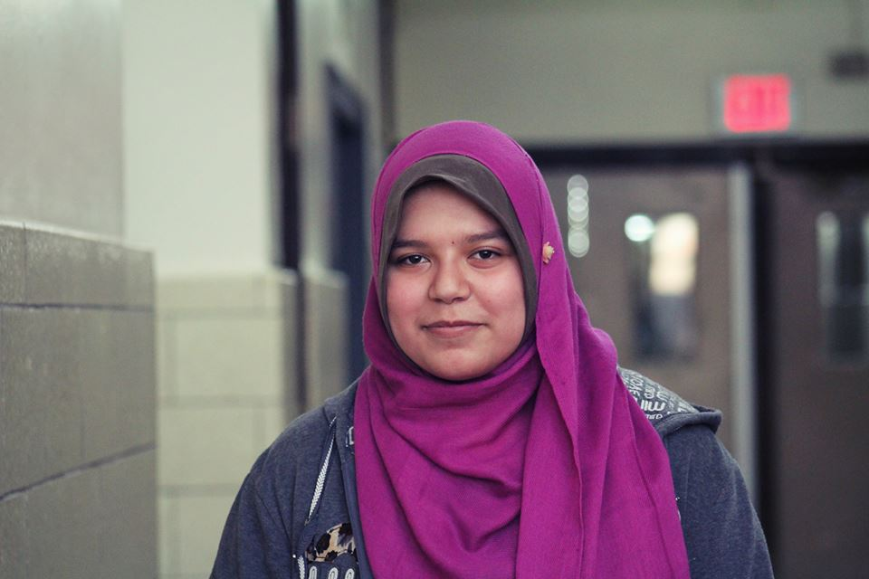
"Life goes on... Whether you choose to move on and take a chance in the unknown. Or stay behind, locked in the past, thinking of what could've been." I've been in Al Noor School for as long as I can remember. It was very very different from tech and it was a huge jump of change I had to take in my life. It was this closed up society with one class of girls and one class of boys for each grade. Same classmates every year take or give a few. Seeing these girls everyday for the whole year for 8 years turned us into family. We literary watched each other grow up and when I learned I got accepted into Brooklyn tech I had no idea whether I should attend or stay in Al Noor. My mentality was here I have so many friends but tech will be this haram school with no Muslims and it's so difficult. But I took the chance knowing that if I didn't I would've regretted it forever. I promised myself that I will try it for 1 year and if I don't like it I'll go back to Al Noor. I don't think I have ever regretted that choice. I am so happy yes of course I do miss my family back in Al Noor but I have created a family here also. They are all one of the greatest people I have ever met Alhamdullilah. I felt so accepted even tho I was that awkward freshie who always like she was judging people lol. I just always didn't know what to say it was different seeing so many different types of Muslims and not the same white hijab and navy blue abaya everyday. MIST and MSA because of these clubs I was able to meet all my amazing close friends now. I've learned to always take a chance (ofc if it's the halal one) so that I don't always think of a what if...? Alhamdullilah knowing that Allah SWT helped me with this decision because 2 years ago I thought it would be the worst decision I would have ever made in my life. "And whosoever puts his trust in Allah, then He will suffice him." Alhamdullilah
Mosammet Asma
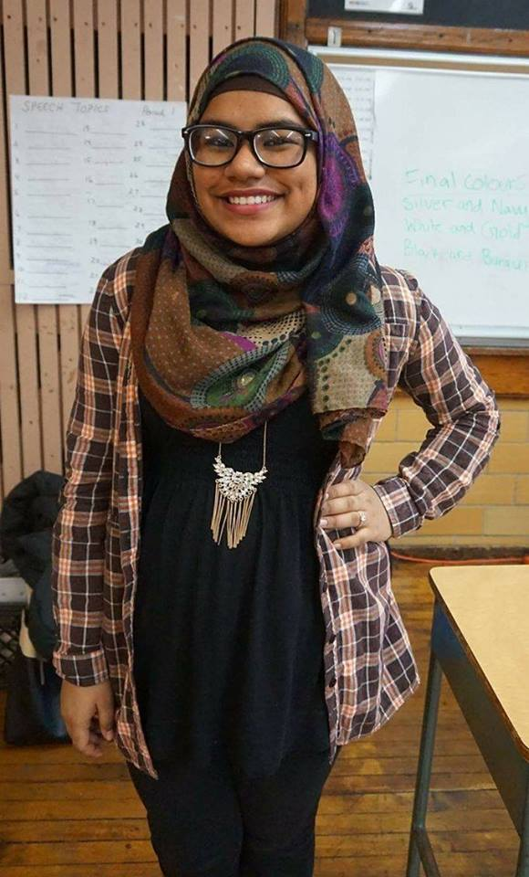
Hands down, my momma is my best friend and my savior. No one can compare to the strength and perseverance that she emits. She grew up on the busy city streets of Dhaka and then was married off to live in the village. The new setting was very difficult for her and she struggled through many issues with her new family through all the sweat and tears. A year later I was born, the little bundle of sunshine that would always keep her up at night. A year after that my dad and her moved to America to start a new life, I can't imagine how she felt moving to a strange new place without the comfort of her family. One of the hardest tolls on her I think was when after five years, she was finally was able to visit her motherland. Within the time period of a vacation that was supposed to be two months that turned into six, she dealt with the sudden and unexpected death of her father, my nana. She also dealt with being deprived of her and her three children's (at the time) documents to return back to America by the person she thought was her companion. After the struggle of selling her prized possessions, constant visits to the embassy and support from her family members she was able to return and bring us back. Despite these struggles which were only a water drop of the many, she's still one of those people who when you first meet her will greet you with a huge smile and won't let you go without her generous hospitality. She reminds me that whenever I feel like giving up, to stand back up and keep pushing through it all. She reminds me to keep smiling and even laughing, life is too short to be upset over petty things, especially when it's just the beginning of it all.
Mohua Sultana

“Knock Knock.”
“Who’s there?
“Mo.”
“Mo who?”
“AAAA.” Get it?
Tabassum Shama
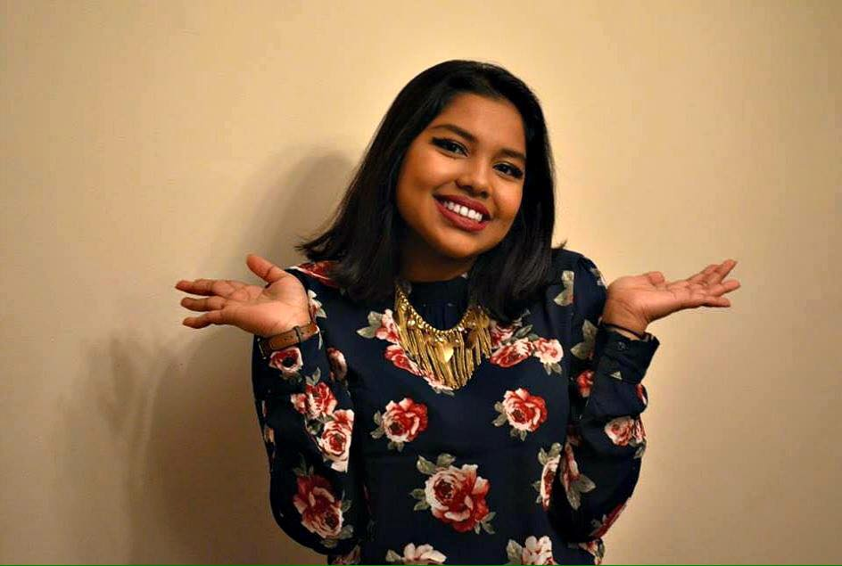
"Happiness is when you go to all your classes for an entire week without cutting." TabAwesome.
Shakil Shaek
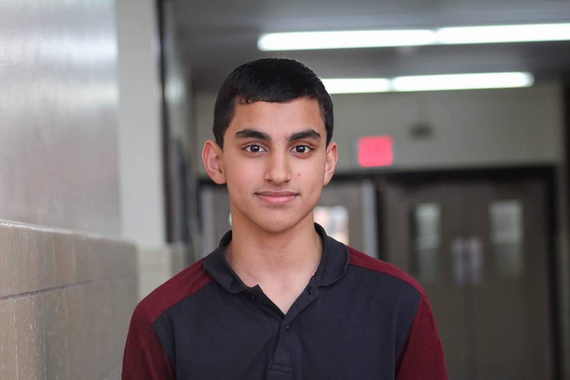
Islam is the most important aspect of my life. However, I'm far away from being a perfect Muslim and I honestly don't really consider myself a 'good'(that word is so subjective) Muslim either. I make way too many mistakes way too frequently. But, I have noticed a change in me over the past 2 years; I've actually started caring about these mistakes. Like a lot of other people, Muslims were the minority in my middle school. There were probably around 15 of us in my grade. I thought of myself to be practicing, but now I know I had a long way to go. I made so many mistakes in middle school, but unlike now, I didn't really acknowledge them. I didn't make an effort to change. Coming to Tech was one of the greatest things that have happened to me. I didn't even really expect to join MSA at first, I actually thought of joining the Robotics team instead. But, they asked for a lot of commitment and work lol. And so, I just went to MSA instead, not aware of the impact it would have on me. My Freshman year was so litt with MSA, MIST, and Jummah. Those three things were the things I looked forward to during the week, and I can definitely say that statement still holds true.
'Muslim is life.'-DJ Khaled"
Nusaira Hussain
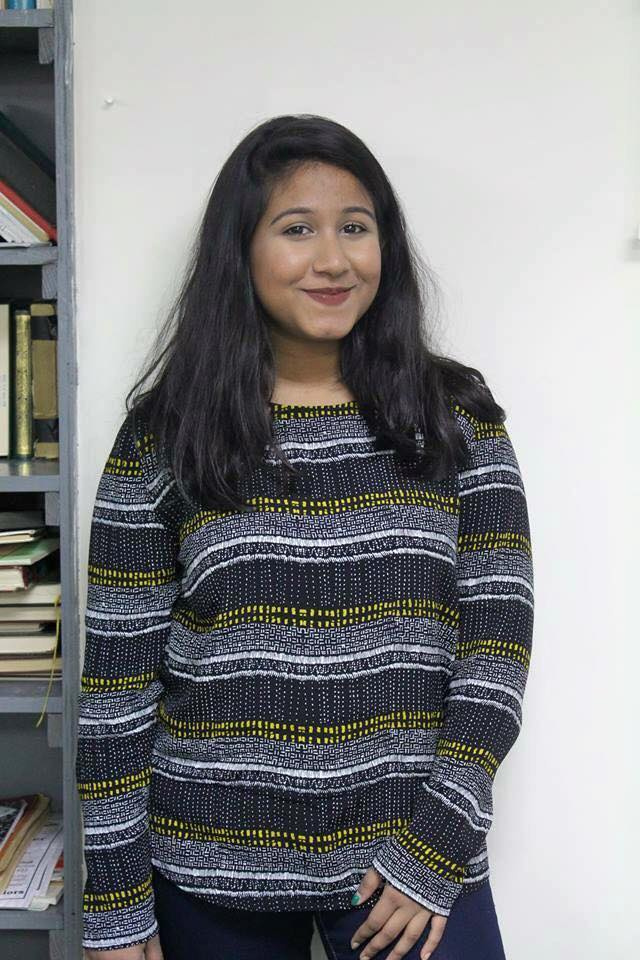
im 2 lazy 2 come up with a caption its second term